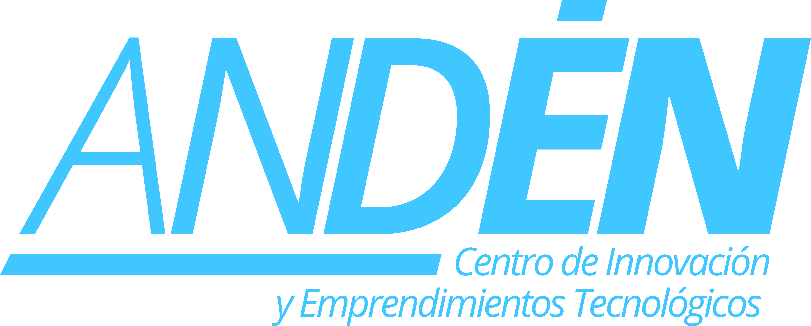
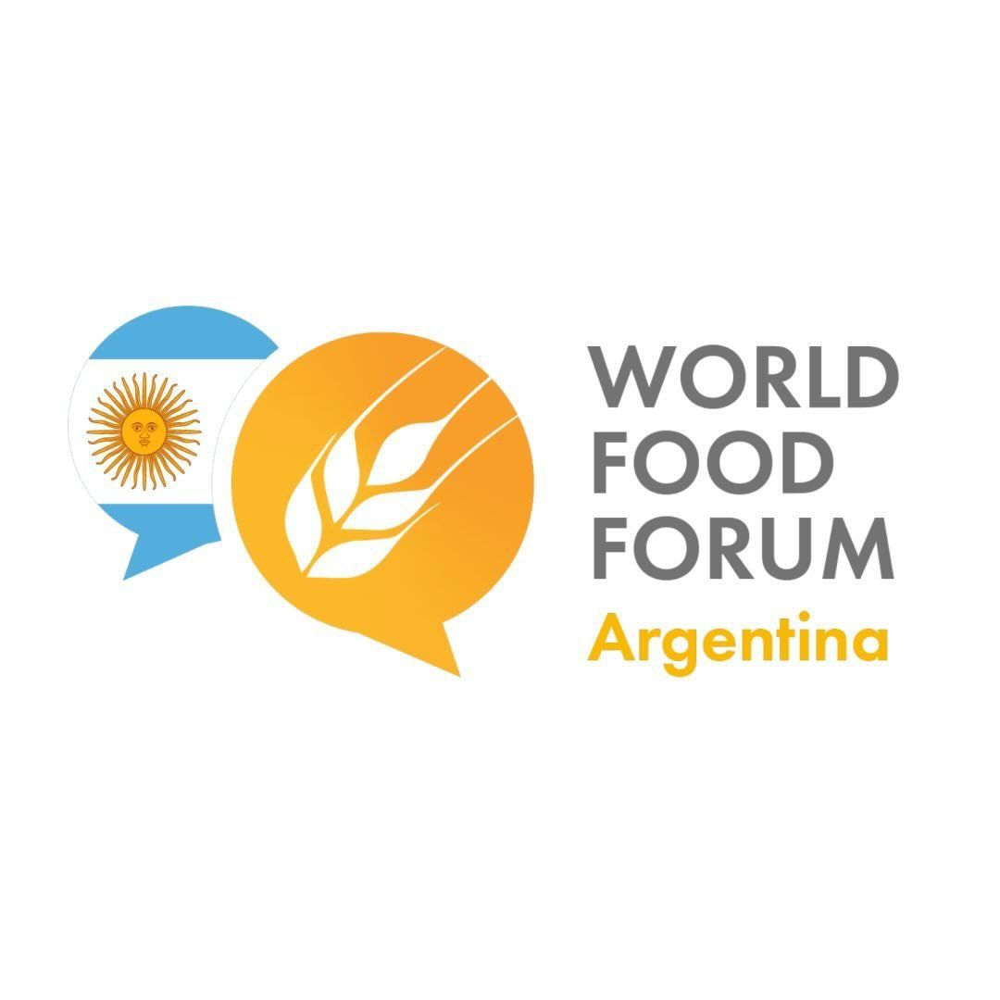
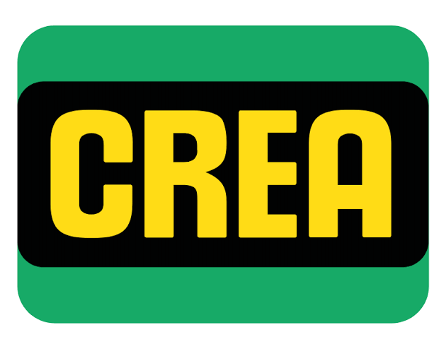
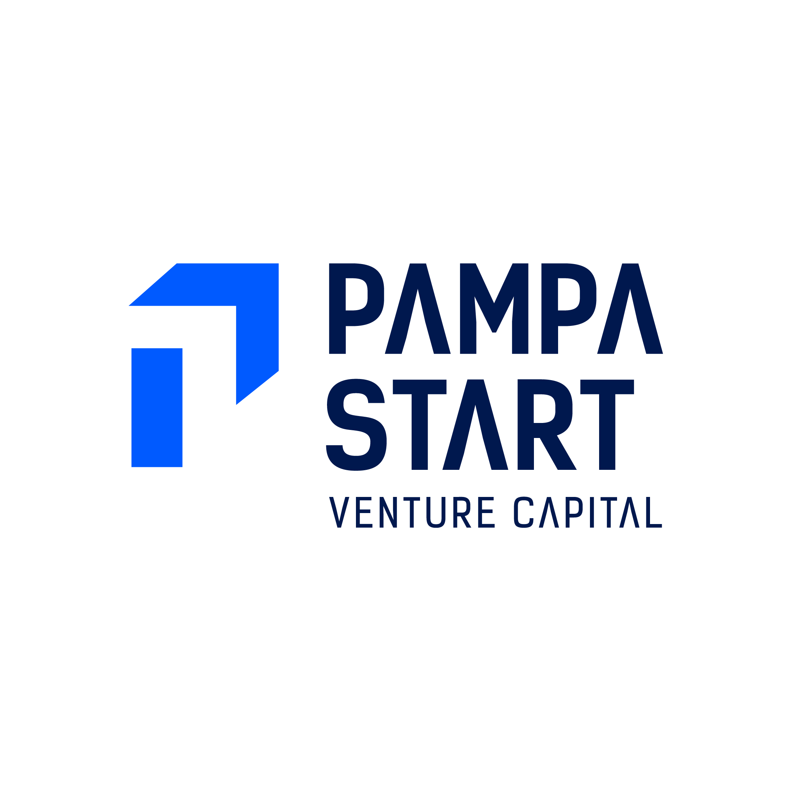

◔
Identificar el problema
Detectar demandas productivas relevantes y comprender el contexto real de uso.
Campo Beta es un programa de desafíos y prototipado que reúne talento técnico, conocimiento sectorial y experiencia productiva para diseñar, desarrollar y validar soluciones de IA en ocho semanas.
Campo Beta desarrolla y valida soluciones de inteligencia artificial para desafíos concretos del sector agropecuario. Mediante una convocatoria abierta se conforman equipos interdisciplinarios que, durante ocho semanas, diseñan, desarrollan y validan prototipos, y el programa cierra con una presentación pública y el acompañamiento de las soluciones con mayor potencial hacia una prueba piloto.
La UTN asume la coordinación general y metodológica. El World Food Forum y CREA aportan perspectiva sobre sistemas agroalimentarios, sostenibilidad y vinculación con el sector productivo, y Pampa Start acompaña el escalado de las soluciones.





Dirección y metodología, convocatoria y selección, conformación de equipos, mentores, apoyo técnico, seguimiento de prototipos, Demo Day, medición e informes.
Sistemas agroalimentarios, sostenibilidad y seguridad alimentaria, tendencias sectoriales, identificación de desafíos, acceso a productores y validación de pilotos.
Vinculación con el ecosistema emprendedor, mentoría de negocio y acompañamiento de las soluciones con mayor potencial hacia el mercado.
El agro genera grandes volúmenes de información, pero muchas decisiones aún se toman con datos fragmentados o conocimiento difícil de sistematizar. Incorporar IA requiere tres pasos.
Detectar demandas productivas relevantes y comprender el contexto real de uso.
Unir especialistas sectoriales con perfiles técnicos, de datos y de negocio.
Probar las soluciones en condiciones cercanas a la realidad, con datos y usuarios.
No es un curso tradicional: los contenidos y especialistas se incorporan según las necesidades de cada etapa.
Trabajamos con desafíos amplios pero concretos en cuanto al problema y el resultado esperado. Cada uno cuenta con una ficha: contexto, usuarios, variables, datos disponibles, restricciones, impacto esperado y pregunta guía.
Los proyectos preexistentes pueden participar si se adaptan a un desafío propuesto y desarrollan durante el programa una nueva aplicación, funcionalidad o validación.
Cada semana con un entregable concreto.
Formulación validada del problema.
Mapa de datos e indicadores iniciales.
Concepto de solución.
Prueba de concepto.
Primera versión funcional.
Informe de validación.
Prototipo validado y plan de piloto.
Demo, memoria técnica y propuesta de continuidad.
Duración total del proyecto: cuatro meses, considerando preparación, convocatoria, ejecución, premiación, pilotos iniciales y evaluación.
Indicadores previstos al finalizar el programa.